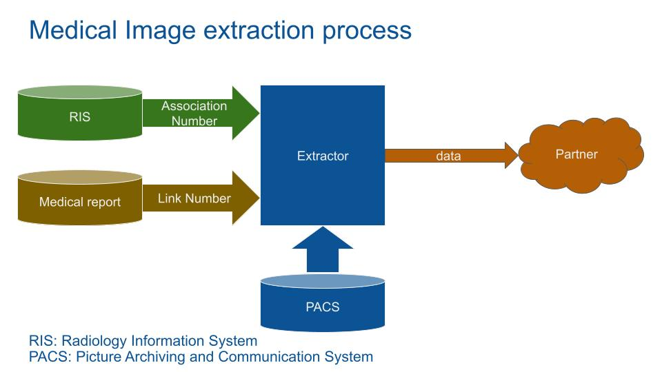

Medical Imaging Data Extractor
Extract DICOM images from PACS in compliance to the GDPR

ABSTRACT
During the last years, Cyber Criminality focused more and more on the healthcare field. The result of a weak security system is costly. As a result, hospital security protocols increase and will increase as the security level required for strategic data.
As highly sensitive data, the General Data Protection Regulation (GDPR) regulations require a high level of security and privacy to export medical imaging data.
This project is an embedded Medical Imaging Data Extractor (MIDE) focused on security and privacy to satisfy the GDPR and the strategic data grade requirements. It extracts selected medical image data from the PACS and sends them to a Cloud storage. This work represents my CurtinX IoT Final Capstone Project.
MOTIVATION
Data is the fuel of AI systems. In the medical field, imaging data is used to build better healthcare services. In the last decade, medical data was a far west where data users extract it without concern of privacy.
But the increase of cyber criminality and the regulation reinforcement change the deal. Hospital security requirements have increased and the GDPR adds a juridic responsibility to users in touch with sensible data.
It is a chance to build a system with privacy and security thinked from the start, and small enough to be deployed anywhere. The Medical Imaging Data Extractor MIDE will extract and send imaging data on a cloud with PrivacyByDesign, SecurityByDesign and Transparency as main focus.
LITERATURE REVIEW
Data users usually extract medical data using a self made algorithm with a level of privacy and security sometimes not sufficiently proven and documented. Data users can buy medical images from countries with weaker regulation (e.g. India). Because sometimes the data is not anonymised, by the GDPR regulation, the new owner is responsible for this sensible data. Buying EU citizen medical images is strictly forbidden.
The MIDE will ensure the hospitals and data users to be in conformance with GDPR regulations when sharing medical imaging data.
The system addresses the data breach risk with transparent, controlled and proven exhaustive Unit Test under Privacy Impact Assessments (PIA). Data anonymization is a proven and transparent process validated by GDPR regulations. Data Breach risks are addressed with a transparent, controlled and proven exhaustive Unit Test report.
The strategic data grade is achieved using an European Single Board Computer (SBC) supplier (STM). The SecurityByDesign IoT SBC reduces hardware and OS vulnerabilities.
GDPR TO SOFTWARE

The European General Data Protection Regulation (GDPR) is a regulation law on data protection and privacy. Medical data is classed as high sensible data. Only the medical team that are directly involved in the patient treatment could get access to the patient data. In all other cases, the data have to be strictly anonymized. Anonymization process will be described later.
Only the medical team that are directly involved in the patient treatment could get access to the patient data. In all other cases, the data have to be strictly anonymized. Anonymization process will be described later.
GDPR introduces the risk-based approach. In a nutshell, data users have to go beyond their legal obligations because they will be responsible for any cases of data breaches.
GDPR requires data controllers to evaluate, at each stage of the data life cycle, the risks of data processing. The data controllers implement data protection impact assessments (PIA). The PIA has to be applied to all processes where the data flow through.
The software is GDPR compliant by translating PIAs to UnitTests. the MIDE PrivacyByDesign process follow this process:
Based on the GDPR regulation, the PIAs are built. From PIA, Unit Tests are written. Based on these Unit Tests, the code is designed. This is a PrivacyByDefault driven by tests process.
MEDICAL IMAGE EXTRACTION PROCESS OVERVUE
Medical storage systems are split into 2 main entities, the Radiology Information System (RIS) and the Picture Archiving and Communication System (PACS).
The RIS store medical exam data: patient identity, medical report, accounting, appointments…
The PACS store mainly image data in a DICOM format (described later).
This link between these 2 systems is the AccessionNumber.
At a starting point, data users need specific image datas (e.g. a type of bone fracture). The entry point is the RIS.
Because it contains sensible information, hospitals won’t allow external partners access to the RIS. The hospital IT team query the RIS and send medical results and image AccessionNumber to the partner.
Note: Querying a PACS with the StudyInstanceUID (study identifier) from the RIS fails most of the time. It's usually due to PACS/RIS segmentations and server migrations. AccessionNumber is a reliable link between RIS and PACS.
Exam identification numbers (AccessionNumber, StudyUID…) could be used to re-identify (reverse identify) and retrieve most of the data with the PACS or RIS. To avoid re-identification, these identifiants are deleted. Because the medical report and the images need to be linked, a link identification number is created during the reports extraction.
Note: The report_link_id has to be unique and not built from any exam ID numbers to avoid possible data re-identification.
With the AccessionNumber and the report_link_id, the MIDE query the PACS to get the DICOM images.
HARDWARE AND INITIALIZATION
Hardware
3 hardware boards are used to speed up the development phase, a classic computer running Linux and 2 ARM core SBCs. The first SBC is an easy to use and well documented Raspberry Pi4 while the second is an industrial grade and secure board from STM.
SBCs requirements:
- Running Optical Character Recognition Tesseract in less than 1 seconds. Tests lead to a minimum of 500Mhz core clock.
- DICOM images can achieve a size of 1GB. RAM size has to be at least 3GB.
- An Ethernet connection (RJ45).
The SBC selected are:
- Raspberry Pi4: 1.5 GHz 64-bit quad core ARM Cortex-A72 processor + 4GB of RAM.
- STM32MP157F: 800MHz ARM Cortex-A7 processor + 4GB of RAM.
A medical PACS server is required to build and test the MIDE in a real environment. A classic x86 linux compatible computer with a PACS server software is required.
The PACS server software chosen is Orthanc[1], an open-source, lightweight DICOM server for healthcare and medical research. Orthanc behaves as a real medical PACS.
Security rules are initialized as the same as hospital PACS by setting the DICOM Application Entity Title (orthanc.json).
Initialization
The AN csv file contains the AccessionNumber and report_link_id to extract. The MIDE will loop through to get DICOM images.
The JSON file contains the initialization information of the hospital (PACS IP, Port, name, cloud bucket name…).
The Log csv file records the precedent DICOMs processed. Useful to debug and to avoid processes already querying DICOMs (e.g. in case of a reboot).
From the PIA, a list of selected medical words (e.g. varus) plus a list of non-sensible DICOM tags. These csv are built from GDPR files and associated PIAs.
No passwords are stored on these files. Passwords are environment variables setup during the MIDE implementation.
DICOM EXTRACTION PROCESS
DICOM Query
Digital Imaging and COmmunication in Medicine (DICOM) is the most used model to store and query medical data since the beginning of the 1980s.
The DICOM standard is known as NEMA[2] standard PS3, and as ISO standard 12052:2017 "Health informatics – Digital imaging and communication in medicine (DICOM) including workflow and data management".
The Python software uses mainly Pydicom[3] and Pynetdicom[4]. These libraries are documented and functional (I used them for over a year).
With the AccessionNumber the MIDE query the PACS to get the DICOM images.
DICOM model is based on nested data. A DICOM object can be nested into a Sequence in order to save multiple Sequences of a DICOM Object (Like a multi sequence IRM with multiple images per Object). Any Data can be saved using a private tag (even a movie in MP4).
DICOM Data Element is typed and encoded as a dictionary, Key: address of the element, Value: Value group. Value group is composed of a value representation (What is this data: here a Person Name), Value Length and Value (the name of the patient).
As a result, DICOM format is very adaptable but hard to access. As Example, OS are not natively compatible (need a DICOM viewer). Because of its strong adaptation, DICOM is still the main medical image data model used.

Querying a PACS with the StudyInstanceUID from the RIS fails most of the time. Another problem is that querying the PACS with the Accession Number can fail (testing results with around 20% of empty DICOM). This is probably due to migration issues.
The solution is to query the PACS in 2 phases:
- 1 Query the PACS (C-FIND) with the AccessionNumber to get all associated StudyInstanceUIDs.
- 2 Query the PACS (C-MOVE) with the StudyInstanceUIDs to get all associated DICOMs.
DICOM Communication
Communication is embedded in DICOM format (the COM of DICOM). The request system works as the TCP/IP protocol. The client asks the server for a service.
The communication configuration is embedded into the DICOM Associate Request Message. The Presentation Context contains the transfert syntax which is the type of data to transfert (MRI, US, Scanner...).
As an example: a radiologist viewer asks the printer for a US print. The printer validates the transfert only if it can print a US image.
The Service Class User SCU and Service Class Provider SCP set the role of each partner. With the same example, the SCU is the viewer (ask for a service) and the printer is the SCP (provide a print service).
After the association establishment, the data blocks are sent. An Acknowledgement closes the end of the transaction.
C-MOVE Process
Because C-GET is not alway implemented by PACSs, querying a DICOM file to a PACS will need an indirect process.
The solution is to use C-MOVE with a trick:
- 1 The MIDE ask the PACS for a DICOM
- 2 The MIDE open a storage service (Store SCP)
- 3 The MIDE ask the PACS to move the DICOMs to a target (itself: the MIDE Store SCP)
- 4 The PACS send the DICOMs to the MIDE Store SCP service.
The MIDE main python object is built based on this structure. The MIDE code is structured in 2 main loops:
- Loop through AccessionNumber to get StudyInstanceUIDs
- Loop through StudyInstanceUID to get DICOMs
DICOM ANONYMIZATION
Health Data Anonymization Strategy
Anonymization is used to protect the identities of individuals in a data set. ISO/TS 25237/Health Informatics/Pseudonymization define it as “a process that removes the association between the identifying data and the data subject”.
The anonymization process is split in 2: masking and de-identification.
Masking blank the data enough so that no analytics can be performed. (e.g. suppress patient name).
De-identification modifie that data so that useful analytics can still be done (e.g. patient age rounded to 5 years), while achieving enough privacy protection. De-identification is a trade off between data analytic and privacy.
The process used by the MIDE is presented in Anonymize Health Data by Khaled El Emam and Luk Arbuckle[5]:
- 1 Selecting direct and indirect Identifiers
- 2 Setting the threshold
- 3 Examining Plausible attacks
- 4 De-identify the data
- 5 Documenting the process
1 Selecting direct and indirect Identifiers
Direct identifiers is data that can be used to uniquely identify individuals (e.g. social security number).
Indirect identifier is a group of data that can identify individuals (e.g. birth date + address).
2 Setting the threshold
The threshold is the acceptable risk level. Considering the sensitivity of the data and the potential harm to patients, any groups of data that could lead to re-identification of a patient is anonymized.
3 Examining Plausible attacks
4 plausibles attacks can be sets:
- The data recipient deliberately tries to re-identify the data.
- The data recipient inadvertently re-identify the data.
- There’s a data breach and the data is “on the wild”.
- An Adversary launches a demonstration attack on the data.
PrivacyByDesign set the principle that “no one can be trusted”. The MIDE anonymization privacy level is based on the first one, even if it is an overestimation of the risks.
4 De-identify the data
De-identification ally one of these 3 process:
- Generalization: Reducing the precision of a field.
- Suppression: remove a tag or set its value to 0 (or Null, NaN).
- Subsampling: Release only a simple random sample of the data.
Most of the DICOM tags selected are technical and un-sensible data. But, concerning the sensible DICOM tags selected:
Suppression
- All direct and indirect sensible tags are suppressed (e.g. Security number, name, address, StudyInstanceUID…).
- AcquisitionTime: replace by MIDE export date
- AccessionNumber: replace by the report-DICOM link number
- InstitutionName: replaced by client_id encoded
- StationName: replaced by MIDE_version
- PatientID: is set to 0
Note: In order to keep the DICOM conformant, the PatientID tag has to exist.
generalization
- StudyDate: Precision reduced to YYYYMM
- PatientAge: patient age rounded to 5 years
5 Documenting the process
The process is documented with PIAs, white lists and UnitTests. This article can be used as a process description for GDPR and PIAs documentations.
MIDE anonymization process
The MIDE anonymization process use 3 stages:
- DICOM Filter: Prefiltering and transforming the DICOM data set to get a conforme DICOM of the required modality (e.g. CT).
- Image Anonymization: Find and blanck any sensible words in the raw DICOM image.
- DICOM tags Filter: De-identify and blank DICOM tags fields.
Filter
The DICOM data set passes through 5 stages.
- Dicom_image_corrupted_filter: Filter DICOM based on the conforme of the pixel array image. If the size and type of the array unmatch with the DICOM format, the DICOM is deleted.
- Dicom_modality_filter: Based on the PrivacyByDesign rules, the filter deletes all DICOM modalities absent from the JSON modality list.
- Dicom_tag_prefiltering: Remove all useless DICOM tags.
- Conforme_dicom_to_pydicom: Write DICOM to a temporary folder to force the conformance with Pydicom.
- Dicom_tag_normalization: Uncompress, set transfert syntax to little endian and Value Representation (VR) to explicite.
Note: Why remove the DICOM tag now and at the end of the anonymization process ? Sometimes, DICOM device providers (e.g. X-ray device) set explicitly nonconformant DICOM tags in their data. Real case: a person's PatientBreedDescription (e.g. "Border Collie American Bulldog mix") tag was set on a DX DICOM exam with the wrong type. Never trust your input data.
Image Anonymization
In order to tune prefilter and Optical Character Recognition (OCR) hyperparameters a batch of DICOMs had been tagged. For efficiency, the batch is passed through the pipeline with a functional test to tune the hyperparameters.
The image flow through these 8 stages:
- Dicom_to_png: Convert DICOM pixel array to png image. Pixel geometrie is respected.
- Image_prefiltering, first stage: Apply filters to the png image to increase OCR detection precision and recall.
- Image_thresholding: If pixel intensity is greater than the set threshold, value set to 255, else set to 0 (black). Because OCR Tesseract had been trained with mostly dark words on clear surfaces, the function inverted the pixel value.
- Image_prefiltering, second stage: Re-filtering the image after the thresholding increases the OCR precision and recall.
- Ocr_procedding: Run Tesseract OCR alpha (perform 20% better) to extract character and word from the png image.
- Ocr_postfiltering: Filter tesseract results based on geometric position (avoid blank the medial region of interest), confidence level of OCR, character size (avoid removing a few pixels), number of characters and the white_list. A filtering based on an approximation of the white_list is performed (if a word is close to the white list one) which increases the anonymization precision and recall.
- Get_background_color: Extract the minimal value of the image color (max value for MONOCHROME1 DICOM and min otherwise).
- Image_blanking: Replace sensible words found by the image background value. Use geometric values.
Tags filter
As seen in the “De_identity the data” chapter, sensible tags are de-identified (patient_birth_date_deidentification and study_date_deidentification) or blanked (dicom_tag_blanking) based on a white list. Finally, 3 tags are overwritten by the dicom_tag_mide function.
CLOUD STORAGE AND LOGS
Based on the “no one can be trusted” PrivacyByDesign rule, the DICOM file is encrypted using AES. Providing more security granulometry:
- A data engineer that needs to access the data for management (e.g. transfer, save) don’t need to open the DICOM. Logging using Google Identity and Access Management (IAM) is enough.
- Data users who need access to the DICOM will login as the data engineer but need to get the AES key to decrypt the DICOM.
The anonymized DICOM is on a Google Cloud service bucket. The security configuration of the bucket has to be set. The password has to be strong, the MIDEs can only write on the bucket. No external can read the bucket. The bucket data will be transfert on a Google database.
Finally logs are written locally on a csv file. Logs should not be exported. The log usage is to debug the MIDE in situ.
HARDWARE AND OS VULNERABILITIES
To avoid malicious modification at any stage of the chip manufacturing process (Hardware Trojan and Side-Channel Analysis) an EU and transparent chip manufacturer is selected: STMicroelectronics.
The STM32MP series SBC board is a STMicroelectronics with SecurityByDesign embedded. The STM32MP series resolves Hardware vulnerabilities with Secure bootchain and Universal Boot Loader. OS software vulnerabilities are addressed with OpenSTLinux BSP and Open Portable Trusted Execution Environment. A strong password is set to access the board using SSH.
LIMITATION AND UPGRADE
Using weak passwords for the SSH and the Cloud decreases the security. A strong security cloud policy is required (Google IAM).
Because the hardware cost is relatively low, blocking physical access by injecting epoxy resins in USB ports and covering the SD card with it reduces the hardware vulnerability.
The board root password is a security weak point. Only those who deploy the software and access the logs need it.
ATM, Dicom_tag_prefiltering and dicom_encryption are not finished yet.
CONCLUSION
This project shows that being in conformance with GDPR regulations is achievable even at a strategic data grade.
The complex DICOM data set added with the non conformant medical device builder makes this project challenging.
Security and Privacy should not be built on patches but proactively. PrivacyByDesign and SecurityByDesign should be the starting point of any AI projects.
TestDriven slows the delivery of the first project version, but saves a significant amount of time and effort during update and debugging.
The code is freely available on githubREFERENCES
[1] Orthanc © Copyright 2015-2022, University Hospital of Liège, Osimis S.A. (Belgium), UCLouvain ICTEAM, and the Orthanc community The Orthanc Book is licensed under Creative Commons CC-BY-SA 4.0.
[2] National Electrical Manufacturers Association Copyright © 2022 NEMA A DICOM® publication.
[3] Pydicom © Copyright 2008-2022, Darcy Mason and pydicom contributors.
[4] Pynetdicom © Copyright 2018-2022, pynetdicom contributors.
[5] Anonymize Health © Copyright 2014 Luk Arbuckle and Khaled El Emam. All rights reserved.
READING
Digital Imaging and Communications in Medicine (DICOM) Department of Radiology, BIDMC, Harvard Medical School, Boston, USA Oleg S. Pianykh ISBN: 978-3-540-74571-6.
Anonymizing Health Data, by Khaled El Emam, Luk Arbuckle, Released December 2013, Publisher(s): O'Reilly Media, Inc. ISBN: 9781449363079.
Python for Data Analysis, 2nd Edition, by Wes McKinney, Released October 2017, Publisher(s): O'Reilly Media, Inc. ISBN: 9781491957660.
Fluent Python, 2nd Edition, by Luciano Ramalho, Released April 2022, Publisher(s): O'Reilly Media, Inc. ISBN: 9781492056355.
By Benoit Pont